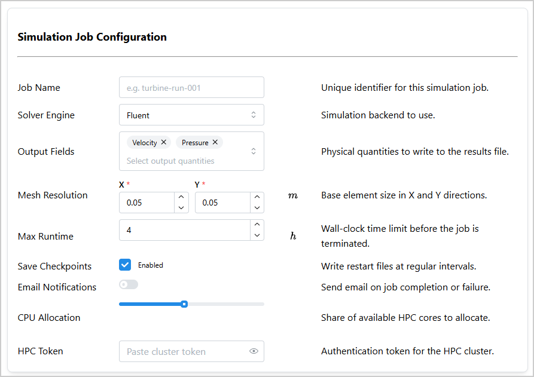
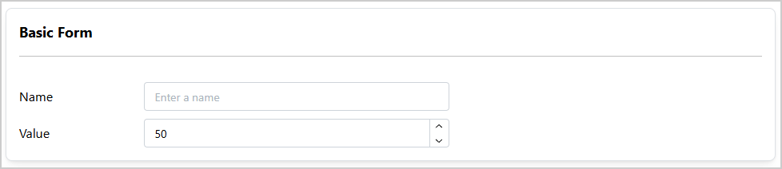
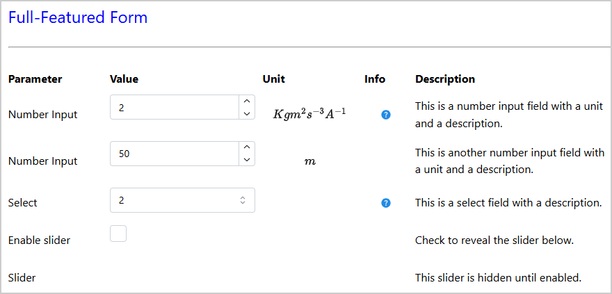
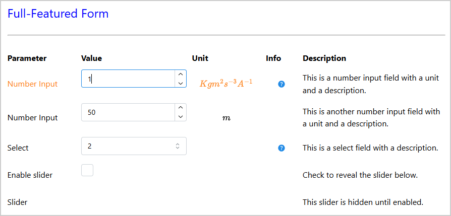

Input Form#
InputForm is a Dash All-in-One (AIO) component that helps developers quickly design input
forms for capturing user selections. An input form is composed of one or several rows, where each
row corresponds to a parameter. Each row can contain one or multiple input fields (for example,
to capture a set of related values for a single parameter).
Key features:
Multiple input types: Supports
NumberInput,TextInput,PasswordInput,Checkbox,Select,MultiSelect,Slider, andSwitchfields.Flexible column layout: Configurable columns (
label,fields,unit,help,description) with adjustable widths.Pattern-matching callbacks: Uses Dash pattern-matching IDs for easy data retrieval.
Help modals: Optional help column that opens a modal with custom content.
Hidden fields: Fields can be hidden on initialization and toggled dynamically using callbacks.
{kind=link}

Usage#
Basic usage#
Import InputForm:
from ansys.solutions.dash_super_components import InputForm
Add a simple InputForm with a text input field and a number input field with labels to your page
layout:
def layout():
input_form = InputForm(
[
{
"label": "Name",
"fields": [
{
"type": "TextInput",
"id": "name-input",
"placeholder": "Enter a name",
}
],
},
{
"label": "Value",
"fields": [
{
"type": "NumberInput",
"id": "value-input",
"min": 0,
"max": 100,
"value": 50,
}
],
},
],
aio_id="basic-form",
title="Basic Form",
)
return html.Div(input_form, style={"width": "900px"})
The following output is expected:
{kind=link}

Advanced usage#
The following example shows a complete form that exercises the constructor parameters
columns, column_widths, column_names, title, title_props,
card_props, and the row-level "id" key (which sets the row_index used in
component IDs). It also demonstrates how a field can be hidden on initialization with
"hidden": True:
def advanced_layout():
input_form = InputForm(
[
{
"id": "number-row-1", # sets row_index to "number-row-1"
"label": "Number Input",
"fields": [
{
"type": "NumberInput",
"value": 2,
"min": 0,
"max": 10,
"id": "number-input-1",
"required": True,
}
],
"help": [html.Div("Help content")],
"unit": "Kgm^{2}s^{-3}A^{-1}",
"description": "This is a number input field with a unit and a description.",
},
{
"id": "number-row-2", # sets row_index to "number-row-2"
"label": "Number Input",
"fields": [
{
"type": "NumberInput",
"value": 50,
"min": 0,
"max": 100,
"id": "number-input-2",
"required": True,
}
],
"unit": "m",
"description": "This is another number input field with a unit and a description.",
},
{
"id": "select-row",
"label": "Select",
"fields": [
{
"type": "Select",
"value": "2",
"data": ["2", "3", "4"],
"id": "select-1",
"required": True,
}
],
"help": [html.Div("Dash Mantine Components | Select")],
"description": "This is a select field with a description.",
},
{
"id": "checkbox-row",
"label": "Enable slider",
"fields": [
{
"type": "Checkbox",
"id": "checkbox-1",
"checked": False,
"size": "md",
}
],
"description": "Check to reveal the slider below.",
},
{
"id": "slider-row",
"label": "Slider",
"fields": [
{
"type": "Slider",
"id": "slider-1",
"min": 0,
"max": 100,
"value": 50,
"hidden": True, # hidden until the checkbox above is checked
}
],
"description": "This slider is hidden until enabled.",
},
],
aio_id="full-form",
title="Full-Featured Form",
title_props={"style": {"fontSize": "24px", "color": "blue"}},
card_props={"shadow": "none", "withBorder": False},
columns=["label", "fields", "unit", "help", "description"],
column_widths={"label": 2, "fields": 3, "unit": 2, "help": 1, "description": 4},
column_names=["Parameter", "Value", "Unit", "Info", "Description"],
)
return html.Div(
input_form,
style={"width": "900px"},
)
The following output is expected:
{kind=link}

Column layout#
The columns of the form and their order are configured using the columns parameter. Pass a
list containing any subset of "label", "fields", "unit", "help", and
"description" in the expected display order. Column widths can be controlled through the
column_widths parameter as a dictionary mapping column names to integer widths. The overall
form width is then distributed proportionally based on the specified widths. For example:
InputForm(
items=[...],
aio_id="my-form",
columns=["label", "fields", "unit"],
column_widths={"label": 3, "fields": 4, "unit": 1},
)
If columns is not provided, the default is
["label", "fields", "unit", "description", "help"]. If column_widths is not provided,
built-in defaults are used. If a particular column is not included in the column_widths
dictionary, its width also defaults to the built-in value.
Retrieving field values in callbacks#
Use InputForm.ids.field(aio_id, field_type, field_id, row_index) to target individual
fields in Dash callbacks. All four arguments are required (or can be pattern-matching wildcards).
The row_index is either the value of the "id" key on the row definition, or the
zero-based integer position of the row in the items list if no "id" was set.
Retrieve a specific field#
The following example targets specific fields by their exact aio_id, field_type,
field_id, and row_index:
@callback(
Output("output", "children"),
Input(
InputForm.ids.field("full-form", "NumberInput", "number-input-1", "number-row-1"), "value"
),
Input(
InputForm.ids.field("full-form", "NumberInput", "number-input-2", "number-row-2"), "value"
),
Input(InputForm.ids.field("full-form", "Select", "select-1", "select-row"), "value"),
Input(InputForm.ids.field("full-form", "Checkbox", "checkbox-1", "checkbox-row"), "checked"),
prevent_initial_call=True,
)
def collect_inputs(number_input_1, number_input_2, select_1, checkbox_1):
"""Collect individual field values."""
return f"{number_input_1} | {number_input_2} | {select_1} | {checkbox_1}"
The resulting output for a sample input might look like this:
[7 | 10 |3 | True]
Retrieve all fields of a specific type using pattern matching#
Use the ALL wildcard from dash_extensions.enrich to collect all fields of a particular
type across the entire form in a single callback:
from dash_extensions.enrich import ALL
@callback(
Output("output_submit", "children"),
Input("submit-button", "n_clicks"),
State(
InputForm.ids.field("full-form", "NumberInput", field_id=ALL, row_index=ALL),
"value",
),
prevent_initial_call=True,
)
def get_all_number_inputs(n_clicks, values):
"""Get all NumberInput values from the form."""
return f"Number Inputs: {values}"
This retrieves all NumberInput fields from the form with aio_id="full-form" as a
flat list in row order.
The resulting output for a sample input might look like this:
Number Inputs: [2, 53]
Note
Using ALL for field_type mixes fields that use "value" (NumberInput,
TextInput, Select, MultiSelect, Slider) and fields that use "checked"
(Checkbox, Switch) in the same callback. If your form contains both types, use separate
callbacks targeting different field types.
Note
Always import ALL, MATCH, and other pattern-matching wildcards from
dash_extensions.enrich, not from dash. Because the Super Components require
DashProxy, the enriched callback pipeline from dash_extensions.enrich must be used
throughout your application.
Updating row-level subcomponents from callbacks#
Row-level subcomponents—label, unit, and description—are identified by
aio_id and row_index and can also be updated from callbacks. Using MATCH for the
row_index allows you to target different subcomponents (row-level subcomponents and fields)
within the same callback, as shown in the following example.
This example colors the label and unit of a row depending on whether the NumberInput value
falls close to the edges of the valid range (note that “c” is the property for text color in Dash
Mantine Components):
from dash_extensions.enrich import MATCH
@callback(
Output(InputForm.ids.label(aio_id="full-form", row_index=MATCH), "c"),
Output(InputForm.ids.unit(aio_id="full-form", row_index=MATCH), "c"),
Input(
InputForm.ids.field(
aio_id="full-form", field_type="NumberInput", field_id="number-input-1", row_index=MATCH
),
"value",
),
Input(
InputForm.ids.field(
aio_id="full-form", field_type="NumberInput", field_id="number-input-1", row_index=MATCH
),
"min",
),
Input(
InputForm.ids.field(
aio_id="full-form", field_type="NumberInput", field_id="number-input-1", row_index=MATCH
),
"max",
),
)
def color_row_by_value(value, min_value, max_value):
"""Color label and unit based on value relative to the valid range."""
value_range = max_value - min_value
if value < min_value + 0.2 * value_range or value > min_value + 0.8 * value_range:
return "orange", "orange"
else:
return "var(--mantine-color-text)", "var(--mantine-color-text)"
The resulting output for a sample input might look like this:
{kind=link}

Using MATCH for cross-form callbacks#
MATCH allows a single callback to respond to the same field across multiple InputForm
instances. This is useful for composed layouts that embed several independent forms of the same
structure. The following example shows how to turn off certain parameters when a “Use defaults”
checkbox is toggled in either form (for example, front, and rear wheels in a configuration panel):
@callback(
Output(
InputForm.ids.field(
aio_id=MATCH, field_type="NumberInput", field_id="diameter", row_index=ALL
),
"disabled",
),
Output(
InputForm.ids.field(
aio_id=MATCH, field_type="Select", field_id="wheel_material", row_index=ALL
),
"disabled",
),
Input(
InputForm.ids.field(
aio_id=MATCH, field_type="Checkbox", field_id="use_defaults", row_index=ALL
),
"checked",
),
)
def enable_disable_wheel_parameters(use_defaults):
"""Disable or enable wheel fields when 'Use defaults' is toggled."""
disabled = bool(use_defaults[0])
return [disabled], [disabled]
This callback fires independently for each form instance (for example, for “Front Wheels” and “Rear Wheels”) whenever the checkbox changes in either form.
Note
Using ALL for row_index allows to target all rows in the form without having to specify
the row index explicitly, but it means that the callback receives lists of values for all
rows, even if only one row contains the targeted field, and that the outputs must also be lists.
The preceding example assumes that only one row contains the use_defaults checkbox, so
the first element of the list in the callback is taken. It also assumes that only one row with a
diameter and one row with a wheel_material field exist, so a single
boolean value in lists is returned for the outputs.
To avoid this, you can specify the row index explicitly instead of using ALL for more
precise targeting. In this case, it is advisable to set the row index using the "id" key in
the row definition to ensure it is unique and easily identifiable.
Value persistence#
By default, UI-side persistence is disabled (persistence=False) for all fields.
To enable it globally, set the persistence parameter on the InputForm constructor.
You can also configure the storage type via persistence_type ("memory",
"session", or "local", default is "memory").
Individual fields can override the global setting by including a "persistence" key in
their field definition. This allows, for example, enabling persistence for most fields
while preventing sensitive values (such as passwords or tokens) from being stored in the
browser.
def control_persistence_layout():
input_form = InputForm(
[
{
"label": "Some input field",
"fields": [
{
"type": "TextInput",
"id": "some-input-field",
"placeholder": "Enter some text here",
}
],
"description": "This value is retained in the browser due to global persistence "
"settings.",
},
{
"label": "API Token",
"fields": [
{
"type": "PasswordInput",
"id": "api-token",
"placeholder": "Paste your token here",
"persistence": False, # always reset to the server-provided value
}
],
"description": "Token is never retained in the browser.",
},
],
aio_id="persistence-control-form",
columns=["label", "fields", "description"],
persistence=True, # enables persistence for the form
persistence_type="session", # values are stored in sessionStorage
)
return html.Div(input_form, style={"width": "900px"})
Note
UI-side persistence only stores values in the browser. To durably persist form values on the server (per project and across reloads), use a callback that writes the form values to your solution model, for example, when the user clicks a Save or Apply button (shown here for a SAF-based solution, but the same principle applies to any Dash app):
@callback(
Input("save-input-form-btn", "n_clicks"),
State(
InputForm.ids.field("backend-form", "TextInput", "project-name", "project-row"),
"value",
),
State(
InputForm.ids.field("backend-form", "NumberInput", "max-iterations", "iterations-row"),
"value",
),
State("url", "pathname"),
prevent_initial_call=True,
)
def save_input_form(
n_clicks: int,
project_name: str,
max_iterations: int,
project: SuperComponentsWithSAFSolution,
) -> None:
"""Write InputForm values to the backend solution model."""
if not n_clicks:
raise PreventUpdate
step = project.steps.my_step
step.project_name = project_name or ""
step.max_iterations = max_iterations or 100
When the layout function initialises each field with a value from the backend
(for example, "value": step.project_name), the first page load always reflects
the last saved state. Subsequent navigations within the same browser tab then show the
user’s in-progress edits thanks to UI-side persistence, until the next save or
reload.
{kind=link}
Properties#
Item keys#
Key |
Description |
Type |
Required |
|---|---|---|---|
label |
A string that describes the input. |
string |
No |
fields |
A list of dictionaries, each defining an input field. |
list |
Yes |
help |
A list of or a singular Dash component, string, or number to indicate to the user how to use or where to get the information for the input. Displayed in a modal when the help icon is clicked. |
any |
No |
unit |
A LaTeX string that describes the unit of the input. Rendered with MathJax. |
string |
No |
description |
A sentence that describes the input. |
string |
No |
id |
A unique identifier for the row. Used as
the |
string |
No |
Field keys#
Key |
Description |
Type |
Required |
|---|---|---|---|
type |
The input field type: |
string |
Yes |
id |
A unique identifier for the field. Used as
the |
string |
Yes |
hidden |
If |
boolean |
No |
persistence |
Controls whether the field value is persisted
in the browser. When |
boolean |
No |
In addition, each field dictionary accepts any property supported by the corresponding
Dash Mantine component: NumberInput, TextInput, PasswordInput, Checkbox,
Select, MultiSelect, Slider, or Switch.
Constructor parameters#
Name |
Description |
Type |
Required |
|---|---|---|---|
items |
A list of dictionaries, each defining a row of the input form. |
list |
Yes |
title |
The title displayed at the top of the form card. |
string |
No |
with_card |
If |
boolean |
No |
card_props |
Properties for the |
dict |
No |
title_props |
Properties for the title |
dict |
No |
columns |
List of column types to display, in order. Accepted values:
|
list |
No |
column_widths |
Dictionary mapping column names to integer widths (Mantine
grid |
dict |
No |
column_names |
List of strings to use as column header labels, in the same
order as |
list |
No |
aio_id |
A unique identifier for the component instance. If not provided, a UUID is generated. |
string |
No |
persistence |
Whether to enable UI-side persistence for all form fields.
When |
boolean |
No |
persistence_type |
The Dash persistence storage type. Accepted values:
|
string |
No |
Component IDs#
The component exposes the following IDs for use in callbacks:
Row-level subcomponents#
InputForm.ids.label(aio_id, row_index): Thedmc.Textlabel component of a row.InputForm.ids.unit(aio_id, row_index): Thedmc.Textunit component of a row.InputForm.ids.description(aio_id, row_index): Thedmc.Textdescription component of a row.InputForm.ids.help(aio_id, row_index): Thedmc.ActionIconhelp button of a row.InputForm.ids.modal(aio_id, row_index): Thedmc.Modalhelp modal of a row.
These IDs are indexed by aio_id and row_index. The row_index is the value of the
"id" key in the row definition (item["id"]), or the zero-based integer position of the row
if no "id" key is set.
Field-level subcomponents#
InputForm.ids.field(aio_id, field_type, field_id, row_index): The input field component itself (for example, admc.NumberInput).InputForm.ids.field_div(aio_id, field_type, field_id, row_index): Thehtml.Divwrapping the input field. Use this ID to toggle field visibility dynamically.
These IDs are indexed by aio_id, field_type (field["type"]), field_id
(field["id"]), and row_index.
Full example#
Check out this example
to learn how to use InputForm.
The example demonstrates:
A minimal form using the default column layout with labels embedded in the field definitions
A form with all supported field types (
TextInput,Select,MultiSelect,NumberInput,Checkbox,Switch,Slider,PasswordInput) in a four-column configuration with named row IDsRetrieving field values using specific
ids.field()IDs, reading a single named field, and collecting all fields of a given type withALLwildcardsA form using all five columns (
label,fields,unit,description,help) with images in the help column and custom title and card appearanceToggling the visibility of individual fields within a row using a checkbox
Two
InputForminstances without a card wrapper composed inside a shared card, withMATCHcallbacks that turn off fields and update label and unit colors based on the entered value
For a minimal self-contained runnable example, see the Input Form page in the Examples gallery.
Source code#
For the full API reference of InputForm, see
InputForm.
Check out the component source code to discover the underlying logic. Contributions are welcomed. You can extend the component functionalities by raising a pull request in the dash-super-components package.